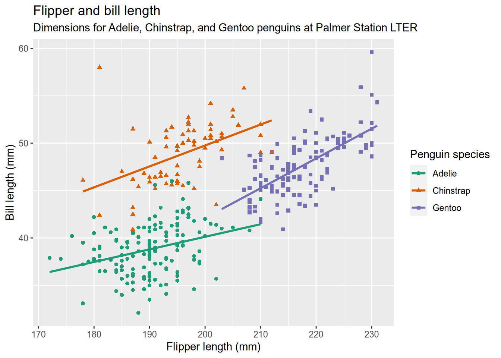
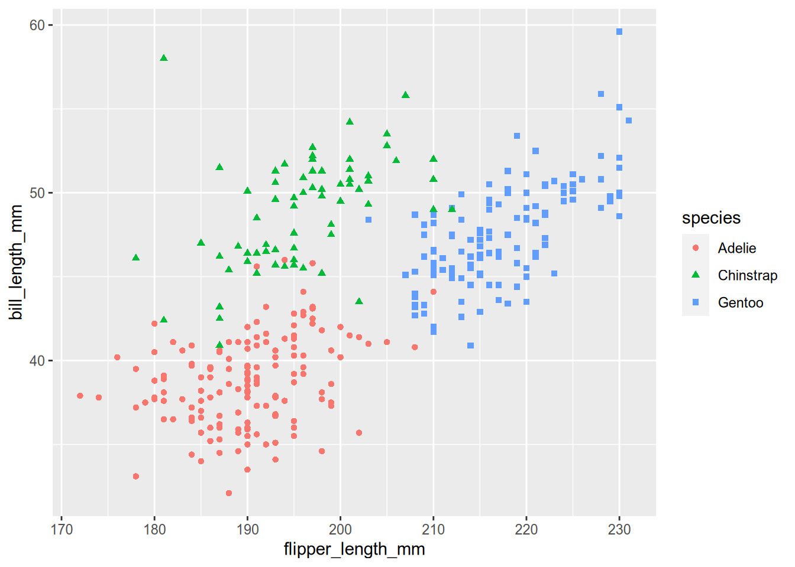
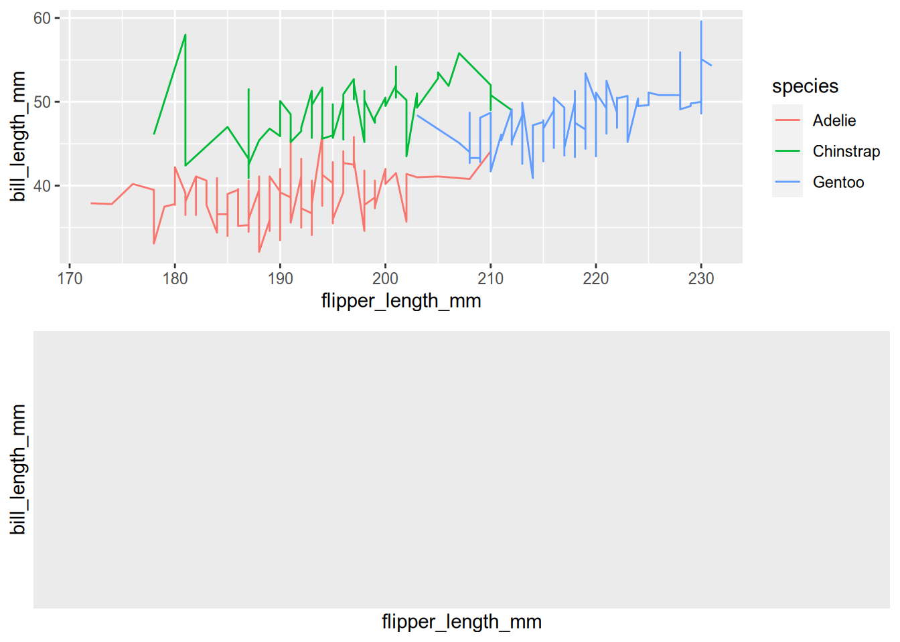
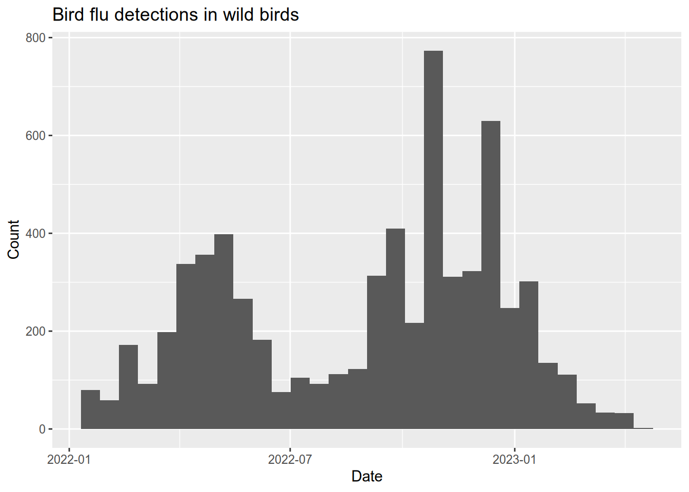
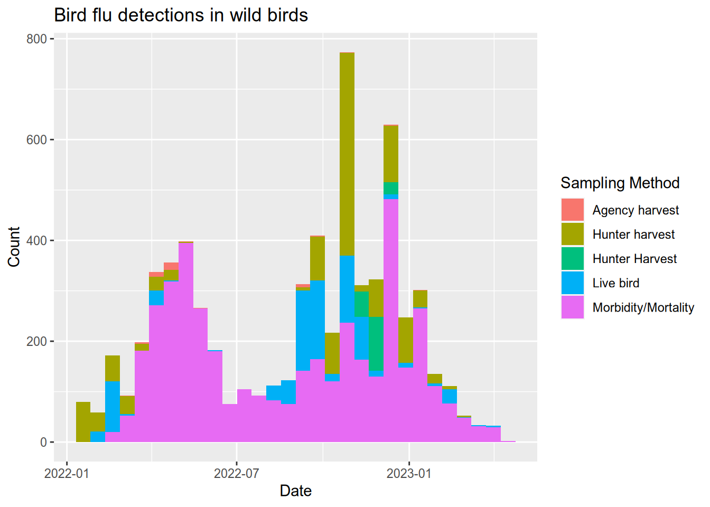
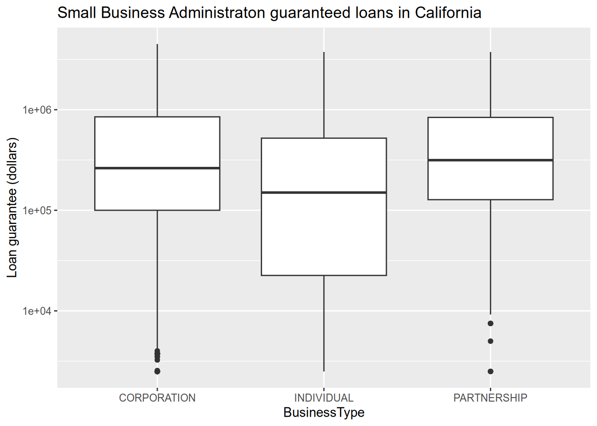
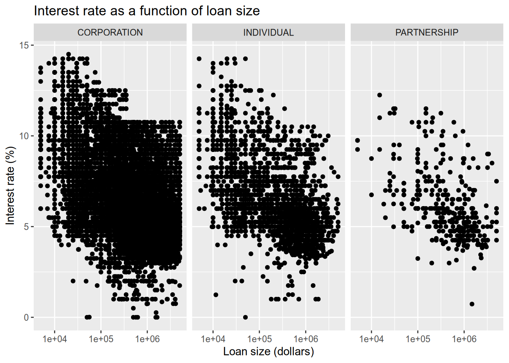
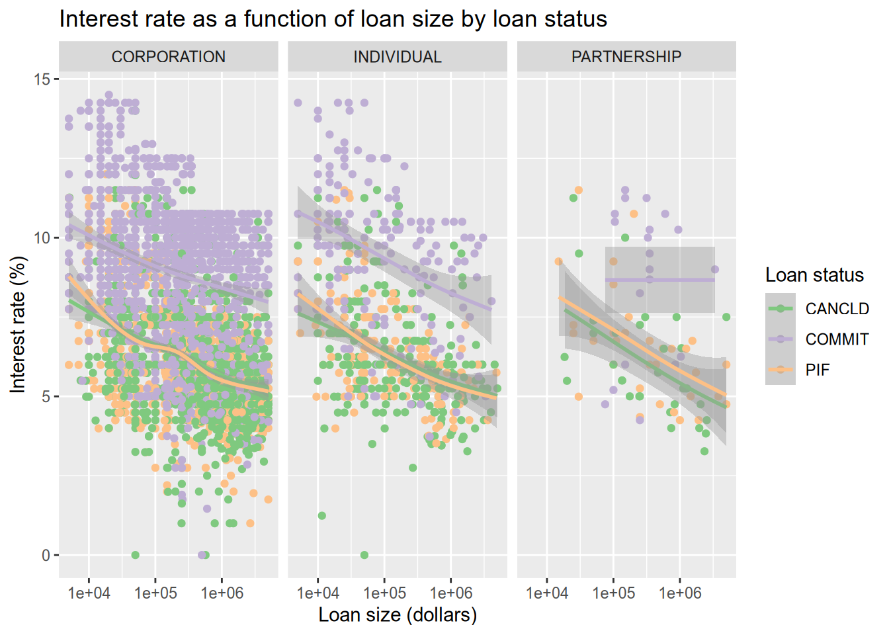

5 Data Visualization in R
We are here today to learn how to do data visualization in R. Some of you will have recently done the Principles of Data Visualization workshop. There you were given a checklist of questions to guide you as you create a plot, which we are going to use today. The checklist is here.
5.1 Our Friend ggplot2
We will be using the R package ggplot2 to create data visualizations. Install it via the install.packages() function. While we are at it, let’s make sure we install all of the packages that we’ll need for today’s workshop. Beyone ggplot2, we’ll use readr for reading data files, dplyr for manupulating data, and palmerpenguins provides a nice dataset.
install.packages("ggplot2")
install.packages("dplyr")
install.packages("readr")
install.packages("palmerpenguins")ggplot2 is an enormously popular R package that provides a way to create data visualizations through a so-called “grammar of graphics” (hence the “gg” in the name). That grammar interface may be a little bit unintuitive at first but once you grasp it, you hold enormous power to quickly craft plots. It doesn’t hurt that the ggplot2 plots look great, too.
5.2 The Grammar of Graphics
The grammar of graphics breaks the elements of statistical graphics into parts in an analogy to human language grammars. Knowing how to put together subject nouns, object nouns, verbs, and adjectives allows you to construct sentences that express meaning. Similarly, the grammar of graphics is a collection of layers and the rules for putting them together to graphically express the meaning of your data.
5.2.1 Example: Palmer Penguins
Let’s look at an example. This uses data from the palmerpenguins package that you just installed (make sure to load the package with library(palmerpenguins)). It is measurements of 344 penguins, collected and made available by Dr. Kristen Gorman and the Palmer Station, Antarctica LTER, a member of the Long Term Ecological Research Network](https://lternet.edu/). The data package was created by Allison Horst. Before jumping in, let’s have a look at the data and the image we want to create.
## # A tibble: 6 × 8
## species island bill_length_mm bill_depth_mm flipper_length_mm body_mass_g
## <fct> <fct> <dbl> <dbl> <int> <int>
## 1 Adelie Torgersen 39.1 18.7 181 3750
## 2 Adelie Torgersen 39.5 17.4 186 3800
## 3 Adelie Torgersen 40.3 18 195 3250
## 4 Adelie Torgersen NA NA NA NA
## 5 Adelie Torgersen 36.7 19.3 193 3450
## 6 Adelie Torgersen 39.3 20.6 190 3650
## # ℹ 2 more variables: sex <fct>, year <int>
5.2.1.1 Examining the Plot
Referring to the graphics checklist, we see that this plot has two numerical features (bill length and flipper length), expressed using a scatter plot. There is also a categorical feature (species), which is indicated by the different colors and shapes of the plot. The plot expresses the fact that flipper length is positively associated with bill length for all thre species of penguins, but the sizes and the relationships between them are unique to each species. There is a title and a legend, the axes are labeled with units, and all of the text is in plain language. There is a risk that the data may hide the message, so a smoothing line is added to each species for clarity. The colors are accessible (avoiding red/green colorblindness issues).
This is a good dataviz, now let’s duplicate it!
5.2.1.2 Duplicating the Palmer Penguins Plot
Here is the code to make the plot:
#
ggplot(penguins) +
aes(x = flipper_length_mm, y = bill_length_mm, color = species, shape = species) +
geom_point() +
geom_smooth(method = lm, se = FALSE) +
xlab("Flipper length (mm)") +
ylab("Bill length (mm)") +
ggtitle(
"Flipper and bill length",
subtitle = "Dimensions for Adelie, Chinstrap, and Gentoo penguins at Palmer Station LTER"
) +
labs(color = "Penguin species", shape = "Penguin species") +
scale_color_brewer(palette = "Dark2")
5.2.1.3 Analysis
This is a complicated data visualization that covers things we haven’t covered yet, so let’s go into how it works. You might have noticed how the code to make the plot is separated into a bunch of function calls, all separated by plus signs (+). Each function does something small and specific. The functions and the ability to add them together provide a powerful and flexible “grammar” to describe the desired plot.
Our plot begins the way that most do - by calling ggplot() with the data as the argument. This creates a plot object (but doesn’t draw it) and sets the data. Then we add the aes() function to describe how features of the data map to aesthetic features of the plot. In our case, that means mapping the flipper length to the x (horizontal) direction, the bill length to the y (vertical) direction, and mapping species to both color and shape. Next, we add a geometry to describe how the mapping should be drawn. Here you can refer to the table at the top of the graphics checklist that suggests geometries to use for different kinds of features. We have numeric features for both x and y, so the table suggests line, scatter (points), and heatmap. We’ve selected points (geom_point()) because we want to show the individual penguins (lines would imply a chain of connections from one penguin to the next.)
Those three parts (data, a mapping, and a geometry) would be enough to get a basic plot that looks like this:
#
ggplot(penguins) +
aes(x = flipper_length_mm, y = bill_length_mm, color = species, shape = species) +
geom_point()
We know, though, that this plot is not complete. In particular, there is no title and the axes aren’t labeled meaningfully. Also, the clouds of points seem to hide the meaning that we are trying to convey and the colors aren’t colorblind-safe. The rest of the pieces of the plot call are meant to address those shortcomings.
We add a second geometry layer with geom_smooth(method=lm, se=FALSE), which specifies the lm method in order to draw a straight (instead of wiggly) smoother through the data. The x-axis label, y-axis labelk and title are set by xlab(), ylab(), and ggtitle(), respectively. We want something more informative than the variable name for the legend title (“Penguin Species” instead of “species”), which is handled by the labs() function. And you’ll recall from the principles of data visualization that you can use Cynthia Brewer’s Color Brewer website to select colorblind-friendly color schemes. Color Brewer is integrated directly into ggplot2, so the scale_color_brewer() function can pull a named color scheme from Color Brewer directly into your plot as the color scale.
We can begin to better understand the grammar of graphics as we consider this example. Notice that the mapping from data features to plot features (the so-called aesthetic mapping, or just aesthetic for short) is separate from the plot geometry. This should encourage you to recognize that we generate data visualizations by expressing information along several dimensions that may be literal (bill length as the x-axis) or abstract (color expresses the penguon species). The geometry determines how those dimensions are drawn on the page, which can be changed without changing the mappings. Let’s see a couple examples of that:
# placing plots via gridExtra
library(gridExtra)
# plot the Palmer penguin data with a line geometry
peng_line = ggplot(penguins) +
aes(x = flipper_length_mm, y = bill_length_mm, color = species, shape = species) +
geom_line()
# plot the Palmer penguin data with a hex heatmap geometry
peng_hex = ggplot(penguins) +
aes(x = flipper_length_mm, y = bill_length_mm, color = species, shape = species) +
geom_hex()
# place the plts side-by-side
grid.arrange(peng_line, peng_hex, ncol=2)
You can see how changing the geometry but not the mapping will plot the same data with a different method - it is for the scientist to make an intelligent choice about mappings and geometries.
–>
5.3 Layers
Layers are the building blocks of the grammar of graphics. The typical pattern is that you express the idea of a plot in the grammar of graphics by adding layers with the addition symbol (+). There aren’t even that many of layers to know! Here is the list, and the name of the function(s) you’ll use to control the layer. Some of the names include asterisks because there are a lot of similar options - for instance, geometry layers include geom_point(), geom_line(), geom_boxplot(), and many more. See the comprehensive listing on the official ggplot2 website.
- Data (
ggplot2()) - provides the data for the visualization. - Aesthetics (
aes()) - a mapping that indicates which variables in the data control which dimension in the plot (here “dimension” is used in an abstract way to include things like shape, color, and line width.) - Geometry (
geom_*()) - how the abstract dimensions of the aesthetic layer will be drawn in the figure. - Statistical transform (
stat_*()) - alters the data before it enters the aesthetics layer - for instance binning or removing duplicates. - Scale (
scale_*()) - used to control the way that values in the data are mapped to the aesthetic dimensions. For instance, you can control how numbers or categories in the data map to colors. - Coordinates (
coord_*()) - used to control how the data are mapped to plot axes. - Facets (
facet_*()) - used to control how data are separated into subplots called “facets”. - Theme (
theme()) - used to control plot details like titles, labels, and legends.
5.4 Guidelines for Graphics
I’ve attached a PDF checklist for creating good data visualizations, created by Nick Ulle of UC Davis Datalab. Download it and keep a copy around - it’s an excellent guide. I’m going to go over how the checklist translates into the grammar of graphics.
5.4.1 Data
You can’t have a data visualization without data! ggplot2 expects that your data is tidy, which means that each row is a complete observation and each column is a unique feature. In fact, ggplot2 is part of an actively developing collection of packages called the tidyverse that provides ways to create and work with tidy data. You dont have to adopt the entire tidyverse to use ggplot2, though.
5.4.2 Feature Types
The first item on the list is a table of options for geometries that are commonly relevant for a given kind of data - for instance, a histogram is a geometry that can be used with a single numeric feature, and a box plot can be used with one numeric and one categorical feature. - Should it be a dot plot? Pie plots are hard to read and bar plots don’t use space efficiently (Cleveland and McGill 1990; Heer and Bostock 2010). Generally a dot plot is a better choice.
5.4.3 Theme Guidelines
- Does the graphic convey important information? Don’t include graphics that are uninformative or redundant.
- Title? Make sure the title explains what the graphic shows.
- Axis labels? Label the axes in plain language (no variable names!).
- Axis units? Label the axes with units (inches, dollars, etc).
- Legend? Any graphic that shows two or more categories coded by style or color must include a legend.
5.4.4 Scale Guidelines
Appropriate scales and limits? Make sure the scales and limits of the axes do not lead people to incorrect conclusions. For side-by-side graphics or graphics that viewers will compare, use identical scales and limits.
Print safe? Design graphics to be legible in black & white. Color is great, but use point and line styles to distinguish groups in addition to color. Also try to choose colors that are accessible to colorblind people. The RColorBrewer and viridis packages can help with choosing colors.
5.4.5 Facet Guidelines
- No more than 5 lines? Line plots with more than 5 lines risk becoming hard-to-read “spaghetti” plots. Generally a line plot with more than 5 lines should be split into multiple plots with fewer lines. If the x-axis is discrete, consider using a heat map instead.
- No overplotting? Scatter plots where many plot points overlap hide the actual patterns in the data. Consider splitting the data into facets, making the points smaller, or using a two-dimensional density plot (a smooth scatter plot) instead.
5.5 Examples
We have covered enough of the grammar of graphics that you should begin to see the patterns in how it is used to express graphical ideas for ggplot2. Here, we will work through some examples.
5.5.1 Bird Flu Mortality
People mail dead birds to the USDA and USGS, where scientists analyze the birds to find out why they died. Right now there is a bird flu epidemic, and the USDA provides public data about the birds in whom the disease has been detected. You can access the data here: https://www.aphis.usda.gov/aphis/ourfocus/animalhealth/animal-disease-information/avian/avian-influenza/hpai-2022/2022-hpai-wild-birds. We will load the data and do some visualization.
# load data directly from the USDA website
flu <- read_csv("data/hpai-wild-birds-ver2.csv")
flu$date <- mdy(flu$`Date Detected`)
# plot a histogram of when bird flu was detected
ggplot(flu) +
aes(x = date) +
geom_histogram() +
ggtitle("Bird flu detections in wild birds") +
xlab("Date") +
ylab("Count")
# plot a histogram of when bird flu was detected
ggplot(flu) +
aes(x = date, fill = `Sampling Method`) +
geom_histogram() +
ggtitle("Bird flu detections in wild birds") +
xlab("Date") +
ylab("Count")
# bar chart shows how the bird flu reports compare between west coast states
subset(flu, State %in% c("California", "Oregon", "Washington")) |>
ggplot() +
aes(x = State, fill = `Sampling Method`) +
stat_count() +
geom_bar() +
ggtitle("Bird flu detections in wild birds (West coast states)") +
ylab("Count")
Let’s compare the bird flu season to the human flu season. Download hospitalization data for the 2021-2022 and 2022-2023 flu seasons from the CDC website here: https://gis.cdc.gov/GRASP/Fluview/FluHospRates.html (the download button is at the top right and you need to specify which seasons to download).
# processing CDC flu data:
cdc <- read_csv("data/FluSurveillance_Custom_Download_Data.csv", skip = 2)
cdc$date <- as_date("1950-01-01")
year(cdc$date) <- cdc$`MMWR-YEAR`
week(cdc$date) <- cdc$`MMWR-WEEK`
# get flu hospitalization counts that include all race, sex, and age categories
cdc_overall <- subset(
cdc,
`AGE CATEGORY` == "Overall" &
`SEX CATEGORY` == "Overall" &
`RACE CATEGORY` == "Overall"
)
# convert the counts to cases per 10 million
cdc_overall$`WEEKLY RATE` <- as.numeric(cdc_overall$`WEEKLY RATE`) * 100
# remake the plot but add a new geom_line() with its own data
ggplot(flu) +
aes(x = date, fill = `Sampling Method`) +
geom_histogram() +
geom_line(data = cdc_overall, mapping = aes(x = date, y = `WEEKLY RATE`), inherit.aes = FALSE) +
ggtitle("Bird flu detections and human flu hospitalizations") +
xlab("Date") +
ylab("Count")
5.5.2 Small Business Loans
The US Small Business Administration (SBA) maintains data on the loans it offers to businesses. Data about loans made since 2020 can be found at https://data.sba.gov/dataset/7-a-504-foia. We’ll load that data and then explore some ways to visualize it.
# load the small business loan data
sba <- read_csv(url("https://data.sba.gov/dataset/0ff8e8e9-b967-4f4e-987c-6ac78c575087/resource/c71ba6cf-b4e0-4e60-98f0-48aeaf4c6460/download/foia-7afy2020-present-asof-221231.csv"))
# check the SBA data to see the data types, etc.
head(sba)## # A tibble: 6 × 39
## AsOfDate Program BorrName BorrStreet BorrCity BorrState BorrZip BankName
## <dbl> <chr> <chr> <chr> <chr> <chr> <chr> <chr>
## 1 20230331 7A Mark Dusa 3623 Swal… Sylvania OH 43560 The Hun…
## 2 20230331 7A Shaddai Harris 614 Valle… Arlingt… TX 76018 PeopleF…
## 3 20230331 7A Aqualon Inc. 7180 Agen… Tipp Ci… OH 45371 The Hun…
## 4 20230331 7A Redline Resta… 2450 Cher… Saint C… FL 34772 SouthSt…
## 5 20230331 7A Meluota Corp 2702 ASTO… ASTORIA NY 11102 Santand…
## 6 20230331 7A Sky Lake Vaca… 15 Nestle… Laconia NH 03246 TD Bank…
## # ℹ 31 more variables: BankFDICNumber <dbl>, BankNCUANumber <dbl>,
## # BankStreet <chr>, BankCity <chr>, BankState <chr>, BankZip <chr>,
## # GrossApproval <dbl>, SBAGuaranteedApproval <dbl>, ApprovalDate <chr>,
## # ApprovalFiscalYear <dbl>, FirstDisbursementDate <chr>,
## # DeliveryMethod <chr>, subpgmdesc <chr>, InitialInterestRate <dbl>,
## # TermInMonths <dbl>, NaicsCode <dbl>, NaicsDescription <chr>,
## # FranchiseCode <chr>, FranchiseName <chr>, ProjectCounty <chr>, …# boxplot of loan sizes by business type
subset(sba, ProjectState == "CA") |>
ggplot() +
aes(x = BusinessType, y = SBAGuaranteedApproval) +
geom_boxplot() +
scale_y_log10() +
ggtitle("Small Business Administraton guaranteed loans in California") +
ylab("Loan guarantee (dollars)")
# relationship between loan size and interest rate
subset(sba, ProjectState == "CA") |>
ggplot() +
aes(x = GrossApproval, y = InitialInterestRate, ) +
geom_point() +
facet_wrap(~BusinessType, ncol = 3) +
scale_x_log10() +
ggtitle("Interest rate as a function of loan size") +
xlab("Loan size (dollars)") +
ylab("Interest rate (%)")
Now let’s see how we can add aesthetic mappings to a plot in order to convey information on a new dimension. In this case, we will color the points by the loan status.
The default color palette of ggplot2 is not accessible because the colors aren’t distinguishable to people with red-green color blindness. Thankfully, ggplot2 integrates directly with Color Brewer (colorbrewer2.org) to get better color palettes We will use the Accent color palette, which is just one of the many options that can be found on the Color Brewer site.
There are a lot of data points, which tent to largely overlap and hide each other. We use a smoother (geom_smooth()) to help call out differences that would otherwise be lost in the noise of the points.
# color the dots by the loan status.
subset(sba, ProjectState == "CA" & LoanStatus != "EXEMPT" & LoanStatus != "CHGOFF") |>
ggplot() +
aes(x = GrossApproval, y = InitialInterestRate, color = LoanStatus) +
geom_point() +
geom_smooth() +
facet_wrap(~BusinessType, ncol = 3) +
scale_x_log10() +
ggtitle("Interest rate as a function of loan size by loan status") +
xlab("Loan size (dollars)") +
ylab("Interest rate (%)") +
labs(color = "Loan status") +
scale_color_brewer(type = "qual", palette = "Accent")
5.6 Faceting
You might notice there are some new commands in the last example. We’ve already explained scale_color_brewer() and geom_smooth(). You may be able to guess that scale_x_log10() applies the log (base 10) scaling to the x-axis. But what is facet_wrap()?
One way to show more information more clearly in a plot is to break the plot into pieces that each show part of the information. In ggplot2, this is called faceting the plot. There are two main facet functions, facet_grid() (which puts plots in a grid), and facet_wrap(), which puts plots side-by-side until it runs out of room, then wraps to a new line. We have used facet_wrap() here, with the first argument being ~BusinessType. This tells ggplot2 to break the plot into pieces by plotting the data for each BusinessType separately.